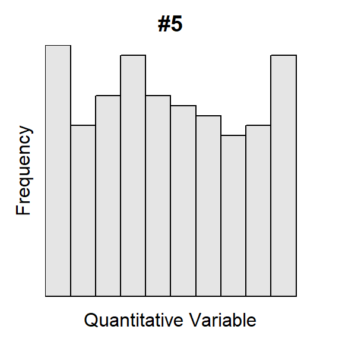
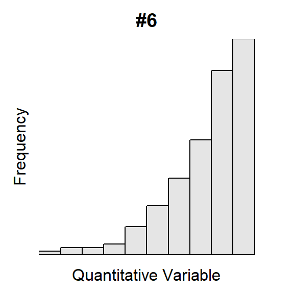
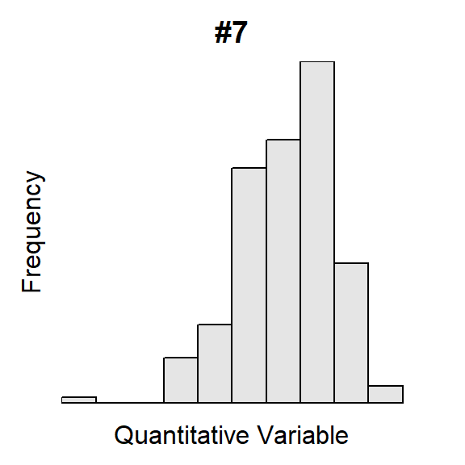
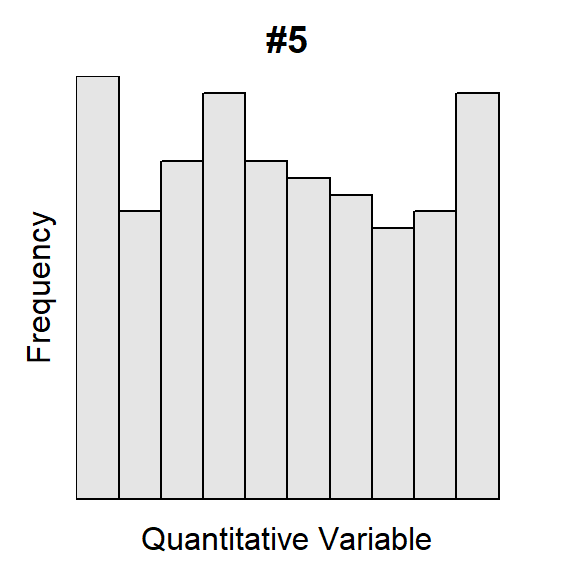
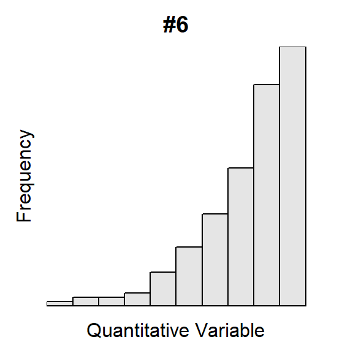
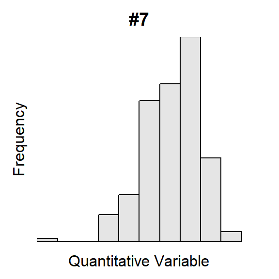
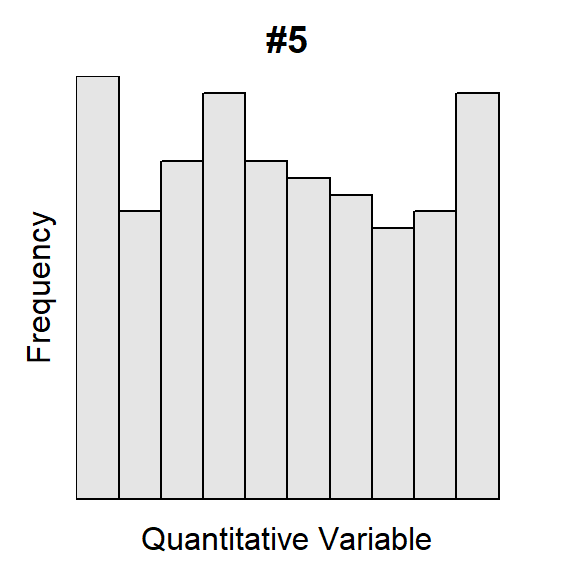
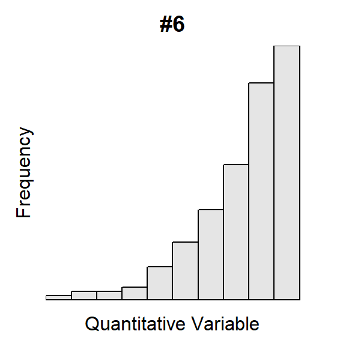
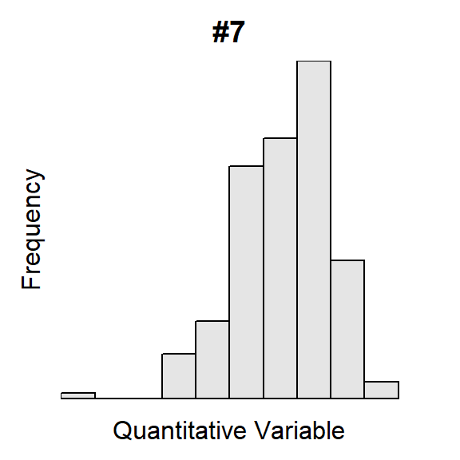
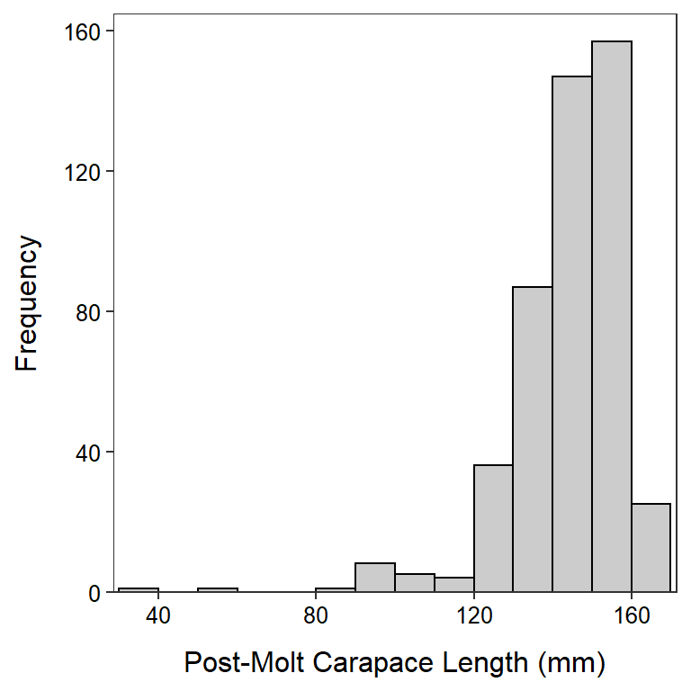

Shape and Outliers I
For each histogram below, describe the shape and presence of outliers.


 

For each histogram below, describe the shape and presence of outliers.


The U.S. Census asked individuals 16 years old and older “How long in minutes is your one-way commute to work each day?”. The mean for individuals from each state was recorded with summary results shown in Figure 1 and Table 1. Perform a thorough EDA with these results.
Figure 1: Histogram for the mean commute time (mins) for each state.
Table 1: Summary statistics for the mean commute time (mins) for each state.
n mean sd min Q1 median Q3 max
51.00 23.75 3.54 16.90 21.65 23.80 25.80 32.00 
Scientists were concered about the overexploitation of Dungeness Crabs (Cancer magister) in some California waters. To better manage this species they examined the post-molt carapace length from a large sample of crabs. Their results are displayed in Figure 2 and Table 2. Perform a thorough EDA with these results.

Figure 2: Histogram for post-smolt carapace length (mm) of Dungeness crab collected in California.
Table 2: Summary statistics for post-smolt carapace length (mm) of Dungeness crab collected in California.
n mean sd min Q1 median Q3 max
472.0 143.9 14.6 38.8 138.0 147.4 153.4 166.8  Cortex and Morais (2007) describe attributes of forest fires in Montesinho Natural Park in Portugal. The number of forest fires by month from 2000-2003 are displayed in Figure 3
Cortex and Morais (2007) describe attributes of forest fires in Montesinho Natural Park in Portugal. The number of forest fires by month from 2000-2003 are displayed in Figure 3

Figure 3: Bar chart of frequency of forest fires in Montesinho Natural Part from 2000-2003.
 Geyer et al. (2017) estimated the fate of all plastic waste produced worldwide (their data is available here). Their results for two years are displayed in Figure 4. Use these results to perform a univariate EDA for the fate of plastic waste in 2015. Also describe how the fate of plastic waste has changed from 1995 to 2015.
Geyer et al. (2017) estimated the fate of all plastic waste produced worldwide (their data is available here). Their results for two years are displayed in Figure 4. Use these results to perform a univariate EDA for the fate of plastic waste in 2015. Also describe how the fate of plastic waste has changed from 1995 to 2015.
Figure 5:
blob:https://ourworldindata.org/5464671c-bcee-46eb-adf5-1d8cdaa883d6